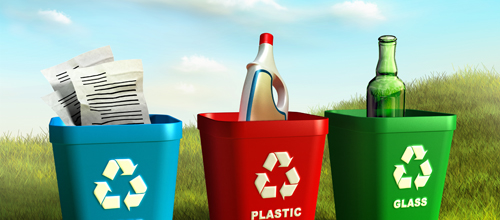
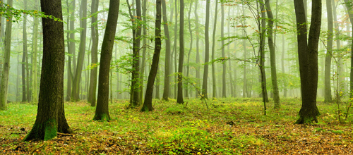
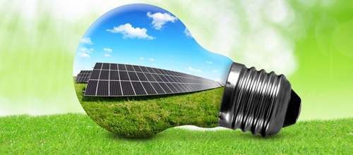

הידעת?
היקפי המיחזור בישראל הם חסרי תקדים, עם למעלה מרבע מהפסולת שממוחזרת בפועל, והיא נמצאת במקומות גבוהים מאד ברשימת המדינות האקולוגיות.
בשנים האחרונות, מונחים דוגמת "איכות הסביבה" או "אקולוגיה" מושלכים לאוויר העולם פעמים רבות, ובצדק גמור. עם בחינת הקשר שבין האדם לסביבה בה הוא חי, הלכה וגברה המודעות לכך שלאדם תפקיד מרכזי בפגיעה בסביבה: החל ממשאבים חיוניים להם הוא זקוק, דרך בעלי החיים או הצמחיה ועד למים או לאוויר המקיפים אותו. המטרה של איכות הסביבה היא למנוע את הנזק הזה, או לכל הפחות להקטין אותו עד לרמת המינימום האפשרית.

היקפי המיחזור בישראל הם חסרי תקדים, עם למעלה מרבע מהפסולת שממוחזרת בפועל, והיא נמצאת במקומות גבוהים מאד ברשימת המדינות האקולוגיות.
לא קשה למנות סיבות בגינן הצורך בשמירה על איכות הסביבה הופך לצו השעה, ומביא לנסיונות רבים להגשמת המטרה.
ממש על קצה המזלג,
הרכב ומפעלי התעשייה מביאים לזיהום אוויר מאסיבי, אשר נשימתו מגדילה את הסיכונים למחלות ריאה, או אפילו
סרטן.
פליטת המזהמים מגדילה את החור באוזון, ועקב גם מביאה, לדעת מומחים, לאפקט החממה ולתופעות טבע
קיצוניות. מצבורי
מים שלמים, כולל אלה שמתבססים עליהם לשתיה או לרחצה, מזוהמים עקב מפעלים תעשייתיים או שפכים, כשגם זיהומי
הקרינה,
למרות שקיימת עדיין מחלוקת ביחס אליהם, הם הכול חוץ מחיוביים עבור הבריאות שלנו.
יערות הדלק הנכרתים
לצרכי
תעשיית הנייר אוזלים אף הם – בהתחשב בכך שעצים מהווים מקור מרכזי לחמצן, ברור מה הסכנה של כך. פסולת מוצקה
מהווה
מפגע נוסף של איכות הסביבה, שעה שהיא מפיצה ריחות ומחלות, פוגעת בקרקע ובמאגרי המים ועוד. וכמובן שניתן
למצוא
דוגמאות נוספות שמבהירות מדוע גם האזרח הקטן חייב לקחת חלק במאבק האקולוגי.

יערות הגשם מהווים סביבת מחייה אידיאלית עבור מינים רבים מאוד של בעלי חיים וצמחים, אך לרוע המזל, היערות הללו עומדים כיום בסכנת הכחדה.
כל הדוגמאות שהובאו מעלה מאפשרות לנו להגיע למסקנה חד משמעית אחת: הפגיעה באיכות הסביבה נוכחת בכל נקודה
בעולם, בייחוד בשנים
האחרונות, ומסכנת את כולנו. החדשות הטובות הן שהנושא צבר מודעות מרשימה בשנים האחרונות, עם אינספור מאמצים,
שנוכחים
גם בישראל, לפתרונות אקולוגיים להגנת הסביבה.
היבט ראשון של המאבק האקולוגי הוא מיחזור,
אשר היקפיו מרשימים במיוחד בישראל. כיום, ניתן למחזר כמעט הכול, ובכך להקטין את הפסולת הסביבתית, לצמצם
עלויות
ולסייע לסביבה: נייר, בקבוקי שתיה, קרטונים, מתכות או מכשירי חשמל הם חלק ממשוואת המיחזור הנוכחית. לכך ניתן
להוסיף את מיחזור המים, שהופך לנפוץ גם כן.

באנרגיה סולארית ניתן להשתמש באינספור אופנים. זה הבסיס לפעילותם של דודי השמש, שחייבים להיות בכל בית . שימושים אחרים הם ייבוש מזון, חימום הבית ועוד.
סוג אחר של פתרון מבוסס על חיסכון רחב ככל האפשר באנרגיה. זו הסיבה בגינה מופיעים תשדירים רבים הקוראים לצמצם
בצריכת
החשמל ככל האפשר, ולנסיונות למעבר למכשירי חשמל חסכוניים באנרגיה.
גם הבתים ה"חכמים", המאפשרים שליטה
מלאה
על מכשירי החשמל בבית נרתמים למאבק, כמו גם בתים שנבנו על פי עקרונות הבניה ה"ירוקה", שתכלתיה חיסכון
במשאבים,
שימוש בחומרים ידידותיים לסביבה, ניצול מיטבי של אור וחום טבעיים ועוד. המרכיב האחרון במשוואה הוא המעבר
לפתרונות
אנרגיה חלופית, כאשר הדוגמא המובהקת ביותר, שמקבלת תאוצה גם בישראל, היא האנרגיה הסולארית.